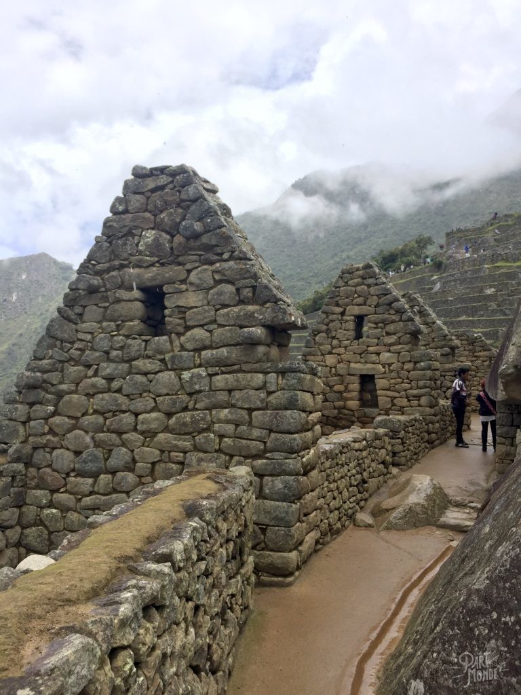
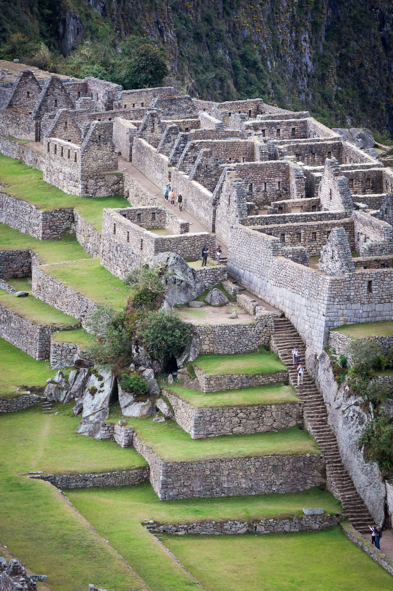

Machu Picchu
About the Machu Picchu
Welcome to Machu Picchu, an extraordinary ancient Inca citadel nestled high in the Andes Mountains of Peru. This mystical site, hidden amidst the clouds, is renowned for its remarkable architecture, breathtaking mountain vistas, and enigmatic history.
Built in the 15th century and abandoned shortly after, Machu Picchu remained a hidden gem until its rediscovery in 1911. Its intricate stonework, terraced fields, and ceremonial sites showcase the remarkable engineering and artistic skill of the Inca civilization.
Machu Picchu's exact purpose and function during the Inca Empire remain a subject of debate among historians and archaeologists. Some theories suggest it was a royal retreat, while others propose it had religious or astronomical significance. Regardless of its precise purpose, Machu Picchu continues to captivate visitors with its majestic beauty and enigmatic aura.
As you explore the site, marvel at the Intihuatana Stone, believed to be an ancient sun calendar, and the Temple of the Sun, which aligns with the sun's movements during the solstices. Take in the awe-inspiring panoramic views of the surrounding mountains, valleys, and the sacred Urubamba River.
 